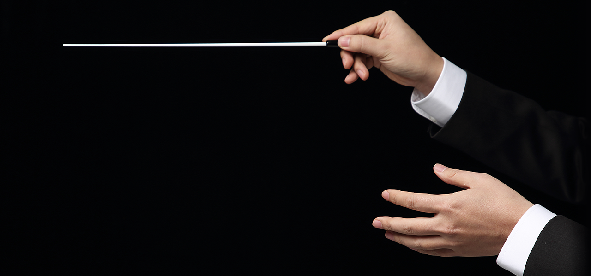

-
토마토Classic공연장의 작은 떨림까지 생생하게 전하는
클래식 음악 전문 채널국내 최고의 공연을 어디에서나 쉽고 편하게자세히 보기
UHD 화질과 5.1Dolby 음원으로
만나보세요!
-
채널소개
국내 유일 UHD, Dolby 5.1 고품질
바로가기
클래식 음악 전문 채널 -
편성표
토마토클래식 채널의 편성표를
확인하세요 -
고객센터
평일 9시~18시 / 02.2128.3388
classic@etomato.com